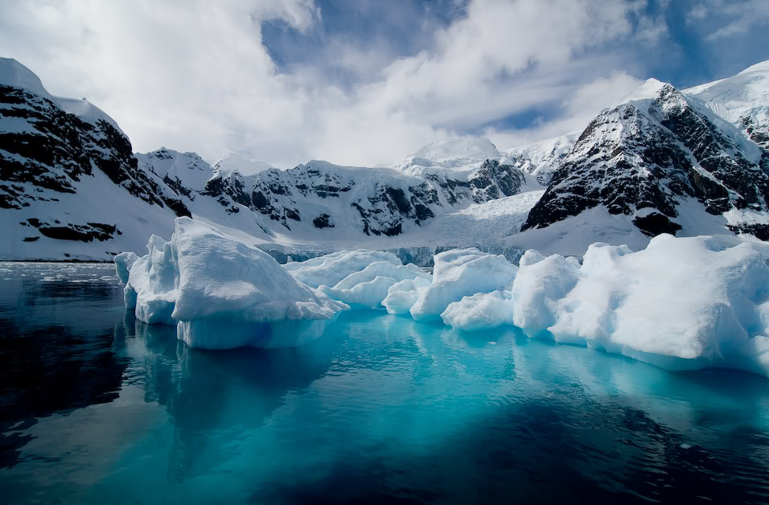
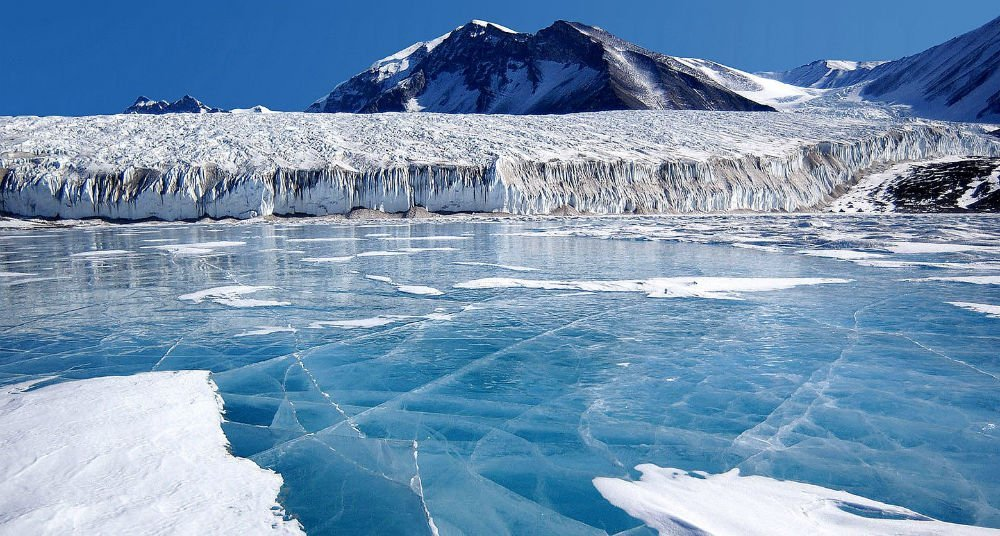
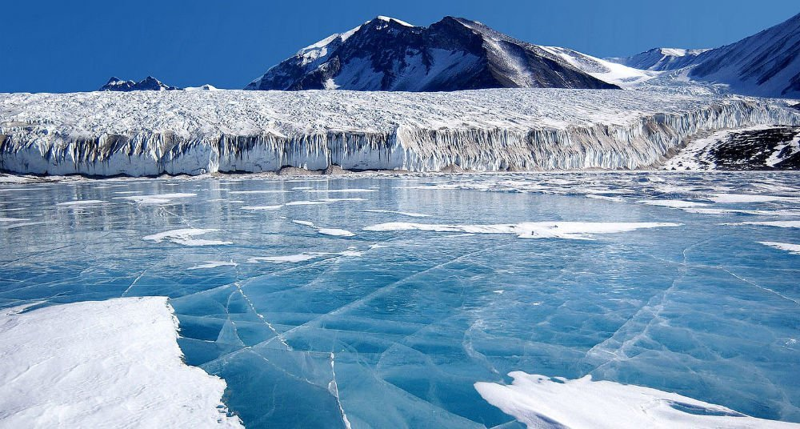
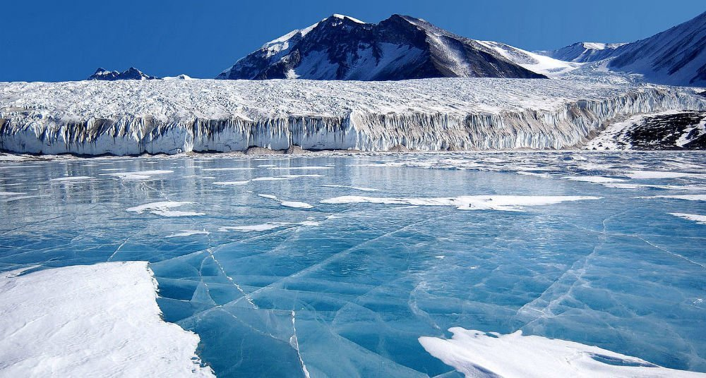
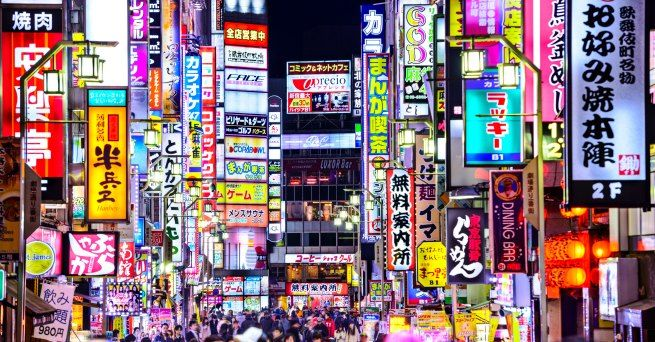
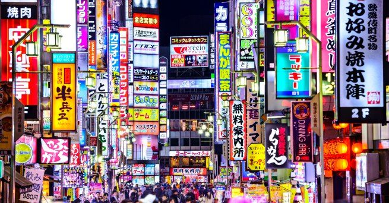
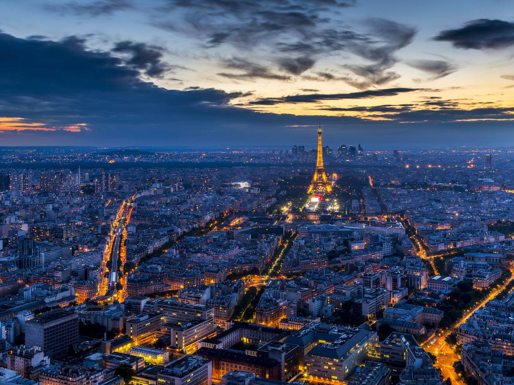
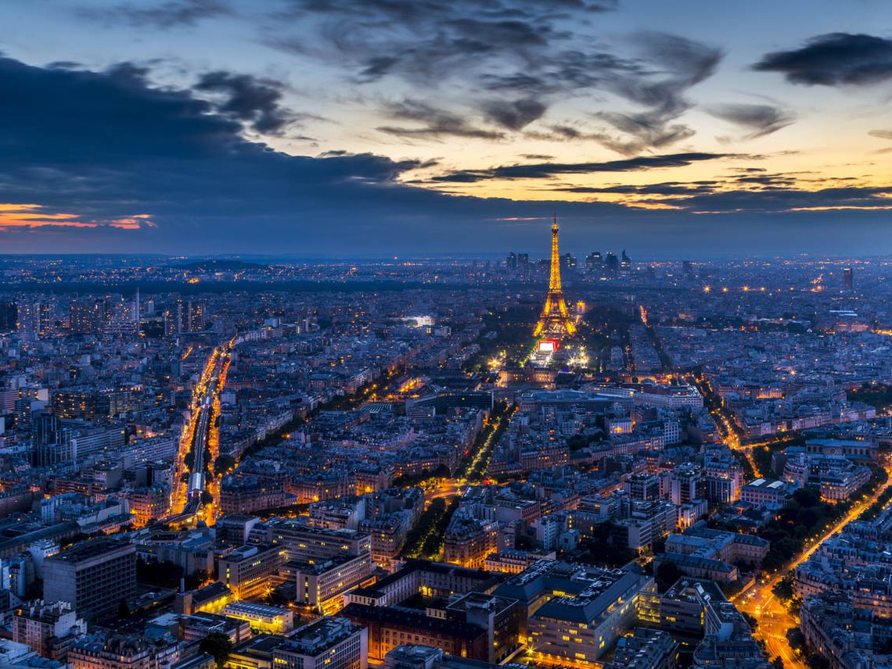
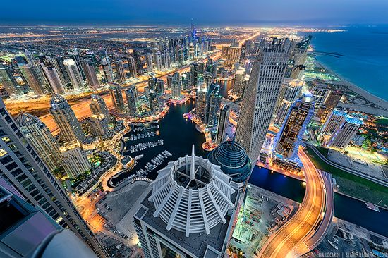
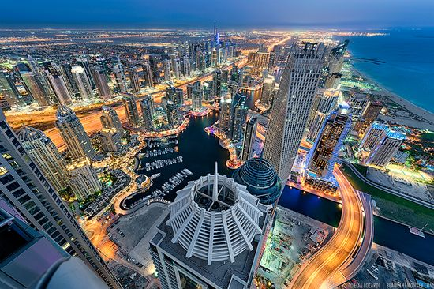

Polo Norte

 

Viajar a Canadá , ya sea que prefieras visitar ciudades, avistar animales silvestres, hacer deportes extremos, capturar fotografías o contemplar las maravillas de la naturaleza, Canadá es sin duda un destino privilegiado que debes tener en cuenta. Sabemos que te encantará vivir en Canadá por una temporada, es un país de gran riqueza cultural y alto nivel de vida que ofrece experiencias inolvidables para todos. Las Cataratas del Niágara imperdibles en tu viaje a Canadá es un lugar de fácil acceso, pues están ubicadas a poco más de una hora en auto desde la ciudad de Toronto. Sin lugar a duda, la atracción natural más famosa de Canadá. Toronto cosmopolita y multicultural Es la ciudad más grande de Canadá, en la que habitan más de 200 grupos étnicos que hablan 120 idiomas diferentes. Una de las ciudades favoritas de los estudiantes internacionales. Parque Nacional Banff el mejor paisaje de Canadá En el corazón de las Montañas Rocosas, se encuentra la ciudad de Banff, que presta su nombre al Parque Nacional. Aquí puedes disfrutar de sitios de acampada, largas caminatas en verano o practicar esquí en invierno. Whistler un destino de esquí de clase mundial. Whistler es un destino de esquí de clase mundial. Es conocido por ser el sitio de muchos de los eventos de esquí de los Juegos Olímpicos de Invierno 2010, pero, que esto no te engañe, Whistler es un destino impresionante en cualquier época del año. Whitehorse: disfruta auroras boreales en Canadá. Whitehorse se encuentra al norte de Canadá, y es la puerta de entrada a otras zonas impresionantes como Alaska y el Parque Nacional Yukón, donde puedes explorar impresionantes áreas naturales. Es uno de los primeros viajes que me gustaría hacer

TLas principales atracciones turística son: Lake Park , con el lago Chena de 260 acres, incluye: campamento con 45 sitios para acampar, incluidos 11 pull-through, Dos pabellones cubiertos, que se pueden alquilar por horas, Dos áreas designadas para nadar con hermosas playas de arena, Una instalación de alquiler de botes que alquila botes de remo, botes de remos, canoas y kayaks. Dos muelles de pesca (uno accesible para discapacitados), Lanzamiento de un barco, Múltiples sitios de pícnic de uso diurno con mesas y anillos. El River Park, a lo largo de cuatro millas del río Chena, incluye: Un campamento con 35 sitios para acampar, incluidos 10 pull-through, Un pabellón de picnic cubierto, que se puede alquilar por hora, Un sendero natural autoguiado de 4,5 kilómetros, Múltiples sitios de pícnic de uso diurno con mesas y anillos de fuego. Santa Claus House está ubicada en el Polo Norte de Alaska, comenzó como una tienda general y la oficina de correos se ha convertido en una atracción popular durante todo el año. El Polo Norte, Alaska, se encuentra a 14 millas al sureste de Fairbanks, Alaska. Las auroras boreales son de la más espectacular que se puede apreciar, esquiar, una linda caminata con una linda familia de perros lobos de Alaska, la nieve y sus bajas temperaturas. Son muchas las atracciones en el polo norte por eso me gustaría viajar al polo norte es muy espectacular.
 

TJapón y sus lugares turísticos para viajar: Golden Pavilion: El Templo del Pabellón de Oro es la atracción turística más popular de Japón y de Kyoto. El pabellón fue construido originalmente como una casa de retiro para Shogun Ashikaga Yoshimitsu a finales del siglo 14. Se hace hincapié en el edificio y los jardines que lo rodean que están en armonía unos con otros. El pabellón está cubierto de pan de oro que pone de relieve la reflexión del pabellón en el estanque y la reflexión de la charca en el edificio. Monte Fuji: El monte Fuji es la montaña más alta de Japón con 3776 metros con un cono excepcionalmente simétrico, el volcán es un símbolo bien conocido de Japón y que se representa con frecuencia en el arte y fotografías, así como una atracción turística popular para los turistas y escaladores. Se estima que 200.000 personas suben Monte Fuji cada año, el 30% de los cuales son extranjeros. El ascenso puede tomar entre tres y ocho horas. El Palacio Imperial: El emperador de Japón hace su hogar en el Palacio Imperial de Tokio. También funciona como un centro administrativo y un museo para exhibir el arte y la historia de Japón. El palacio se encuentra en las ruinas de los castillos más antiguos que fueron destruidos por el fuego o la guerra, y los arquitectos han honrado el pasado mediante la incorporación de elementos de diseño de las diferentes épocas. El nuevo palacio está rodeado de jardines japoneses. La Torre de Tokio: La torre de Tokio es un testimonio del avance de la tecnología y la vida moderna. Inspirado en el diseño de la torre Eiffel, es la segunda estructura artificial más alta de Japón y funciona como una torre de comunicaciones y de observación. Los visitantes pueden subir a la torre para ver las vistas incomparables de Tokio y sus alrededores, así como sus tiendas y restaurantes. El Templo Todaiji: Este templo en Nara es una hazaña de la ingeniería. No sólo es mayor edificio de madera en el mundo, es el hogar de la estatua de bronce de Buda más grande del mundo. Rodeado de bellos jardines y vida silvestre, la escuela Kegon del budismo se centra aquí y los terrenos ocupan muchas piezas de la historia japonesa y budista. El gran Buda de Kamakura: esta es una representación al aire libre colosal de Buda Amida, una de las figuras budistas más famosas de Japón. Fundida en bronce, el Gran Buda con una altura de 13 metros, pesa casi 93 toneladas. A pesar de que originalmente se encuentraba en un pequeño templo de madera, el Gran Buda ahora se encuentra al aire libre como el templo original que fue arrasado por un tsunami en el siglo 15. El Castillo de Himeji: Esta considerado el mejor ejemplo existente de la arquitectura de fortalezas de Japón. Fue fortificada para defenderse de los enemigos durante el período feudal, pero se ha reconstruido muchas veces a lo largo de los siglos y refleja los diferentes periodos de diseño. Sobrevivió a los bombardeos de la Segunda Guerra Mundial y se ve con frecuencia en las películas nacionales y extranjeras, entre ellas la película de James Bond «Sólo se vive dos veces».

 

TLos principales lugares turísticos de Francia para viajar: Basílica del Sagrado Corazón de París Uno de los monumentos más reconocibles de París, una iglesia católica romana, ubicada en la colina de montmartre, el punto más alto de París. Esta basílica está dedicada al sagrado corazón de Jesús. Diseñado por el arquitecto francés Paul Abadie, la construcción tuvo lugar entre 1875 y 1914. Puente Pont Du Gard, Nime, Es un gigantesco puente romano antiguo ubicado en la ciudad de Roma, en el sur de Francia., Al otro lado del río gardon. El puente tiene una longitud de 50 kilómetros, construido en el siglo I d.C. Los antiguos romanos lo usaban para transportar agua desde la comuna francesa de Uzes hasta Nime. También está incluido en los sitios del patrimonio mundial de la UNESCO. Arc De Triomphe, París Arc De Triomphe es el arco triunfal más popular de la ciudad de París. La construcción de este monumento fue ordenada por el emperador francés Napoleón en 1806 para honrar a los guerreros que combatieron con él en varias guerras. Se inauguró en el año 1836, la construcción se había detenido varias veces después de la abdicación del emperador Napoleón. Verdon Gorge Canyon, Alpes De Haute Province También se lo conoce como ‘gran cañón de Europa’, ubicado en la provincia de Alpes De Haute en el sureste de Francia. Este cañón fluvial tiene unos 25 kilómetros de longitud y los acantilados tienen una altura de 700 metros. Es muy conocido por su agua de color verde turquesa del río Verdon dentro de esa área, debido a los minerales de las rocas y las fuentes glaciares. Chateau De Chambord, Loir et Cher El castillo sin terminar más grande del valle del Loira, en el centro de Francia. Es el mejor ejemplo de arquitectura renacentista francesa. Curiosamente, toda la casa señorial está rodeada por el parque forestal más grande de la nación. Fue construido para el rey Francois I como un pabellón de caza para él. Ahora es una de las atracciones turísticas más populares y sitios del patrimonio mundial de Francia. El Louvre, París Uno de los museos más grandes del mundo, ubicado en París. La impresionante colección de arte de este museo lo convierte en el museo más visitado del mundo. Hay 35000 objetos prehistóricos, que incluyen antigüedades egipcias, joyas de la corona, pinturas y esculturas antiguas. Palacio de Versalles, II Región de Francia, palacio de Versailes El Palacio de Versalles es el palacio más grande de Francia, también conocido como castillo de Versalles. La primera parte de este palacio fue construida por el rey Luis XIII en 1624 como pabellón de caza. Posteriormente Luis XIV, el sucesor de Luis XIII lo amplió como el palacio más grande del país. El palacio cuenta con 700 habitaciones, 2153 ventanas, 68 escaleras y 2000 acres de hermoso jardín. Disneyland, París El complejo de entretenimiento de Disneyland abrió en el centro de París en el año 1992. A partir de 2014 ha sido visitado más de 275 millones de veces por los visitantes, una de las atracciones más populares de París. Disneyland cubre un área de 4800 acres, incluye dos parques temáticos, complejos turísticos, secciones de compras y entretenimiento. 1 Torre Eiffel, París Uno de los hitos más reconocibles de París. Fue inaugurado en el año 1889 como arco de entrada a la exposición universal o feria mundial. Durante los próximos 41 años, se erige como la estructura artificial más alta del mundo, tiene una altura de 320 metros. La construcción de la torre Eiffel comenzó en 1887 y tardó dos años en completarse. Lleva el nombre de Gustave Eiffel, el arquitecto francés al frente de la construcción de la torre Eiffel.
 

Los principales lugares turísticos de dubai: Burj Al Arab El Burj Al Arab (Torre de los Árabes) es el único hotel con 7 estrellas del mundo y fue diseñado con la idea de que asemejara una vela de navegación. Este impresionante edificio se eleva a 321 metros de altura dominando el cielo de Dubái haciéndolo el 4to edificio más alto del mundo. Es uno de los símbolos más icónicos del país y además es simplemente un edificio majestuoso; ninguna visita a Dubái estará completa sin una visita a este magnífico edificio. Puedes tener hermosas vistas de este desde varios puntos de la ciudad pero sin duda el mejor punto para fotografiarlo es desde playa pública que se encuentra cerca, desde allí puedes fácilmente obtener fabulosas imagen de este ícono del país árabe. Además de ser uno de los edificios más fotografiados del mundo, con plenas razones ha sido votado como el mejor hotel del mundo. En las noches, el Burj Al Arab danza al compás de un impresionante juego de luces que lo hace simplemente imperdible.Burj Khalifa Esta es la torre más alta del mundo y es una magnífica obra de la ingeniería. La historia de la torre la puedes conocer a profundidad si decides tomar el tour hasta el observatorio llamado “at the top”, el punto de observación más alto del mundo. La vista desde el piso 124 es el punto álgido de la visita a la torre que se ha convertido en un punto imperdible de quienes visitan el Medio Oriente. El paseo comienza en la planta baja donde se encuentra el Dubái Mall, el centro comercial más grande del mundo. En este sitio los visitantes pueden ver una presentación multimedia de la historia de Dubái y de la maravilla que representa este edificio. Las fuentes de Dubái Una vez más rompiendo records, esta vez con las fuentes danzantes más grandes del mundo. Esta maravilla se encuentra en la entrada de la torre Burj Khalifa. Ubicadas en un lago que ocupa 30 acres, esta fuente lanza chorros de agua que alcanzan hasta 150 metros de alto. La estructura de la fuente cubre al menos 270 metros de largo que forman círculos de varios tamaños así como dos arcos centrales. Fue diseñada por la empresa californiana WET, los mismos creadores de la fuente del Bellagio en Las Vegas. La música que acompaña la danza de esta fuente incluyen piezas árabes entre ellas la canción ganadora de premios en swahili, la famosa pieza de danza árabe Shik, Shak, Shok y la pieza Con te Partiró popularizada por el tenor Andrea Bochelli. Más de 6 mil luces WET y 25 proyectores de colores crean un hermoso espectro abstracto sobre las aguas danzantes. Hotel Atlantis Este majestuoso hotel 5 estrellas se encuentra en la isla artificial llamada La Palma que ha desatado la imaginación de muchos desde su concepción. Desde el momento en el que llegas estarás envuelto en un mágico mundo de lujos y placer. Este resort incluye actividades para disfrutar solo, en pareja o con la familia completa entre las que podemos mencionar: hábitats marinos únicos, un impresionante parque acuático, prístinas y hermosas playas, 18 restaurantes de exquisita cocina, un spa y múltiples tiendas para premiarte como quieras. Global Village Por los últimos 15 años, la Global Village (villa global) ha estado proveyendo entretenimiento cultural a la vez que ofrece experiencias de compra para los millones de visitantes que la disfrutan. Impresionantes presentaciones en vivo, exquisita cocina, manualidades y artefactos auténticos de varios países son algunas de las cosas que podrás encontrar entre sus pabellones. Hay muchas más atracciones como paseos, juegos y espectáculos de fuegos artificiales que hacen de esta visita una experiencia única. La villa está abierta desde noviembre hasta marzo cada año. Isla Palma Jumeirah Palma Jumeirah tiene todo lo que necesitas para tener unas vacaciones perfectas. En ella puedes encontrar lujosos hoteles, impresionantes atracciones turísticas, espectaculares centros comerciales. Bien sea que solo quieres relajarte o sumergirte en un mágico mundo de lujos y entretenimiento esta es una de los más solicitados destinos de Dubái.
Mis Sitios
Polo norte iconos creados por Freepik - Flaticon Francia iconos creados por Freepik - Flaticon Dubai iconos creados por Flat-icons-com - Flaticon Japonés iconos creados por juicy_fish - Flaticon Canadá iconos creados por Freepik - Flaticon